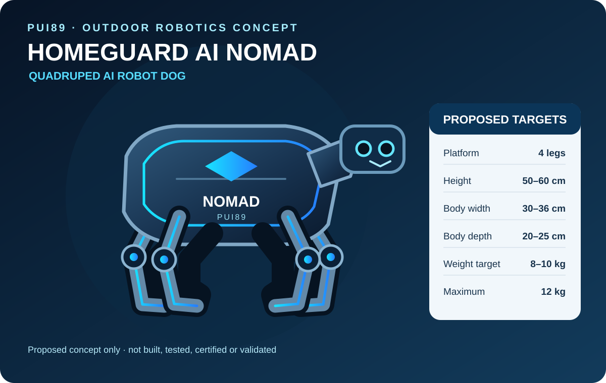
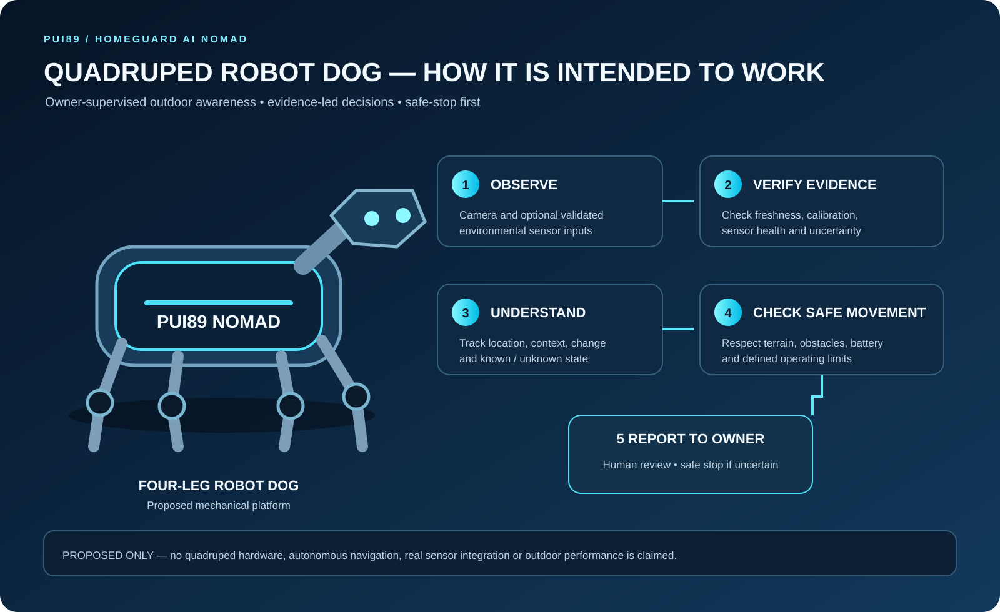

The outdoor member of the HOMEGUARD AI robot family. NOMAD is designed for owner-supervised travel and camping; a separate HOME robot is planned for indoor environments. Both share one evidence-driven intelligence platform.
Detect Early. Locate Precisely. Protect Better.
Proposed robot design · not built · not tested · not certified
Two purpose-built robots. One shared intelligence platform.
HOMEGUARD AI is planned as two distinct mobile-robot designs because indoor buildings and outdoor environments have different movement, sensing, protection and safety requirements. The software intelligence is shared; the physical platforms are not interchangeable.
INDOOR ROBOT CONCEPT
HOMEGUARD AI HOME
Compact, quiet and designed for indoor rooms, corridors and careful movement around people and pets.

OUTDOOR ROBOT CONCEPT
HOMEGUARD AI NOMAD
A separate four-wheel rover concept for outdoor travel and owner-supervised camping.
01 / INDOOR ROBOT · PROPOSED
HOMEGUARD AI HOME
A dedicated indoor guardian for homes and buildings. Priorities: compact dimensions, quiet movement, careful navigation around people, furniture and pets, indoor mapping, privacy-conscious sensing and return to a charging dock.
Indoor-friendly mobility and low-speed control
Room, corridor and obstacle awareness
Charging-dock and indoor navigation concept
Final size, sensors and hardware remain to be engineered
02 / OUTDOOR ROBOT · PROPOSED
HOMEGUARD AI NOMAD
A suitcase-sized portable outdoor robot for owner-supervised travel and camping. Priorities: slim proportions, four compact wheels, a retractable travel handle, removable battery, weather protection and local navigation.
Four compact wheels; no oversized off-road tyres
Travel-case form with retractable handle and removable battery
Complete weight target: 8–10 kg; absolute maximum: 12 kg including battery, sensors and computer
Low-light and suitable environmental sensing goals
Travel and camping profiles, not indoor patrol
Both designs are proposals, not built or validated robots. They share PUI89 AI Core, evidence verification, uncertainty and risk assessment, safe decision logic and owner-facing reports. Mechanical design, sensors, navigation and environmental limits remain product-specific.
NOMAD outdoor platform — proposed design
The specifications below apply to NOMAD only, not to the separate HOME indoor robot.
MOBILE PLATFORM / PROPOSED
Slim suitcase-style robot
Exactly four compact wheels; wheel diameter to be finalized through mobility and terrain testing
Slim suitcase-style hard-shell body for one-person carrying
Retractable travel handle and removable battery
Raised sensor mast for a planned 360° awareness view
Forward obstacle-sensing pod and visible status lighting
Protected central compartment for battery and computing hardware
Portable charging concept for field and campsite use
Quiet, low-speed movement with supervised operating boundaries
SAFETY / NOT A CERTIFIED CAPABILITY
Awareness before action
Observe and report possible smoke, heat, movement or environmental changes only when suitable sensors are fitted and validated
Keep people in control of escalation and response
Stop safely when localization, route confidence or battery reserve is insufficient
No weapons, explosive payload, firefighting or hazardous-material handling
No claim of blast survival, fireproofing or certified explosion protection
The illustration and physical layout are proposed design work, not a built robot. Sensor selection, fire performance, battery safety, weather resistance, navigation and any hazardous-area protection require separate engineering requirements and independent testing.
How NOMAD is intended to work
The proposed workflow is simple: observe the surroundings, check whether the evidence is reliable, understand where and when it happened, choose a safe movement state, and report to the owner. The owner reviews alerts and decides what to do.

Proposed workflow only. Sensor inputs, navigation and autonomous behaviour have not been implemented or validated.
Return only when localization, route safety and battery reserve are sufficient. Otherwise, the intended response is a safe stop and an owner alert when communication is available.
Physical design targets
Preliminary engineering targets for a suitcase-sized robot that one person can carry. These are proposals, not measured specifications.
SIZE & MOBILITY / PROPOSED
Portable travel-case platform
Height: 50–60 cm
Width: 30–36 cm
Depth: 20–25 cm
Complete weight target: 8–10 kg
Absolute maximum: 12 kg, including battery, sensors and computer
Four small, compact wheels — no oversized off-road tyres
Retractable handle; removable battery; lightweight hard shell
SENSORS & FIELD USE / PROPOSED
Awareness equipment goals
Raised 360° awareness sensor module
Forward camera and obstacle sensing
Low-light camera and suitable thermal sensor
Weather-resistant enclosure, subject to a defined test rating
GPS outdoors when available; local navigation and offline-first operation
Portable charging and quiet night mode
Product-specific operating profiles
HOME and NOMAD are separate robot types. HOME is designed for indoor buildings; NOMAD is designed for owner-supervised outdoor use.
01 / HOME · INDOOR
HOME indoor profile
Supervised indoor patrol, room and corridor awareness, cautious movement around people and pets, privacy-conscious sensing and return to an indoor charging dock when route and battery conditions permit.
02 / NOMAD · TRAVEL
NOMAD travel profile
Travel in a compact suitcase form when transported; deploy into supervised outdoor robot mode in a defined area. Use GPS when available and local navigation; do not roam independently into unknown areas.
03 / NOMAD · CAMPING
NOMAD camping profile
Quiet night monitoring with reduced lighting and non-essential sound. Report possible movement, smoke, environmental changes or nearby wildlife for human review.
Safety boundaries and responsible operation
Safe movement and return
Return to the owner or dock only when localization, route safety and battery reserve are sufficient
Otherwise stop safely and alert the owner when communication is available
Use supervised speed and geofenced operating areas
Do not enter unknown wilderness or hazardous areas to investigate
Fire, explosion and wildlife limits
Fire-resistant materials and battery protection require defined engineering tests; fire-resistant does not mean fireproof
Preventing ignition in a hazardous atmosphere is different from surviving an external blast; no explosion-proof or blast-survival claim is made
Do not chase, touch, corner, trap, deter or approach wildlife; keep distance and alert a human
Not a firefighting robot, wildlife deterrent or guaranteed personal-protection device
All robot dimensions, sensors, navigation, weather resistance, battery protection and safety features are future proposals. No physical robot has been built, integrated, certified or validated.
HOMEGUARD AI software foundation
The mobile NOMAD concept is intended to build on a separate evidence-driven software foundation for building-condition awareness. The current software demonstrator is deterministic and simulation-only; it does not control robot motors or integrate physical sensors.
One building. Multiple evidence streams.
HOMEGUARD is planned as a layered monitoring and decision-support system. It connects observations to a building, floor, room and component context instead of treating every sensor alert as an isolated event.
01 / STRUCTURE
Structural health monitoring
Track vibration, movement, strain, crack change and floor-to-floor response against documented baselines. Significant changes require qualified engineering assessment.
02 / ELECTRICAL
Electrical safety signals
Review suitable current, voltage, temperature and protective-device signals. Thermal patterns alone cannot prove an electrical fault or leakage.
03 / FIRE & LIFE
Fire, smoke and life safety
Support visibility around certified alarm status and related observations. HOMEGUARD must never replace, delay or disable certified alarms.
04 / WATER
Water, moisture and mould risk
Correlate leak sensors, moisture, humidity, condensation and visible changes. Humidity alone cannot confirm mould or identify a hidden leak.
05 / AIR & GAS
Air quality, gas and odour
Use purpose-built, appropriately certified sensors where available. Odour-related signals need separate validation and cannot identify a substance by themselves.
06 / ENVIRONMENT
Sound, voice, light and climate
Explore abnormal sound/noise, privacy-conscious acoustic features, light and flicker, heat, cold and humidity trends as contextual evidence—not standalone diagnoses.
Multi-sensory intelligence
The capability catalogue is a development roadmap, not a claim that 29 trained AI models or deployed sensors exist. Shared intelligence services should preserve source, time, calibration, quality, uncertainty and spatial context.
Evidence and reasoning foundation
Evidence integrity and provenance
Sensor health, freshness and calibration checks
Change, deterioration and anomaly tracking
World-state and spatial context
Confidence calibration and uncertainty
What-if analysis and incident continuity
Human review and continuous improvement
Physical observation domains
Structural vibration, displacement and strain
Electrical and thermal signals
Water, moisture and humidity
Fire, smoke and air-quality status
Gas and odour-related sensor signals
Sound, noise and privacy-conscious acoustic features
Light, heat and cold changes
How the system is intended to work
01Observe
Receive timestamped sensor evidence
02Validate
Check quality, calibration and gaps
03Locate
Map building, floor, room and component
04Assess
Compare baselines and explain uncertainty
05Escalate
Recommend verification by people
What is implemented—and what is not
Implemented / tested foundation
Typed sensor observations and baseline records
Transparent baseline-deviation evaluation
Quality, calibration, unit and freshness checks
Deterministic synthetic three-floor scenario
Machine-readable finding report schema
Automated tests and GitHub Actions CI
Initial CI completed successfully. See the repository workflow for the current run.
Future work / not yet validated
Real sensor acquisition and calibrated installation
Building-specific baselines and sensor fusion
Structural modal analysis and engineering review
Live resident dashboard and incident notifications
Trained models and measured detection performance
Building pilots, certifications and safety approvals
All current scenario evidence is synthetic and simulation-only.
Safety, privacy and trust
HOMEGUARD is a research and decision-support project, not a certified alarm, electrical diagnosis, structural certification or autonomous building-control system. Residents and building operators remain in control; qualified professionals and certified protective devices remain essential.
Privacy by design
Prefer non-identifying sensor data. Avoid unnecessary indoor video, facial recognition and speech recording. Define access, retention and consent before any real deployment.
Evidence before conclusions
Distinguish measured observations, synthetic data, assumptions and hypotheses. Missing, stale, drifting or conflicting inputs should reduce confidence and trigger review.
Responsible supply chain
Review provenance, licence, security, privacy, hardware fit and total cost before adoption. Current procurement policy excludes Chinese-origin AI models, providers and model-hosting services.
Both proposed robots use the same one-person handling and weight targets. Their body shapes differ for their environments, but neither product is intended to be heavier by design.
HOME · INDOOR
Lift and carry
Recessed, ergonomic lifting grips on both sides
Retractable pull handle positioned at the rear
Four compact wheels for indoor movement
NOMAD · PORTABLE OUTDOOR
Lift and pull
Strong integrated top lifting handle plus recessed side grips
Retractable telescopic pull handle
Four compact suitcase-style wheels
Shared proposed weight standard: 8–10 kg complete-weight target; 12 kg absolute maximum including battery, sensors, computer, wheels, handles and casing. These are engineering targets, not measured product weights. Handle strength, grip comfort, balance, wheel stability and locking mechanisms must be tested before the designs can be described as safe or validated. One-person lifting comfort is not guaranteed for every person.
 INDOOR ROBOT CONCEPT
INDOOR ROBOT CONCEPT